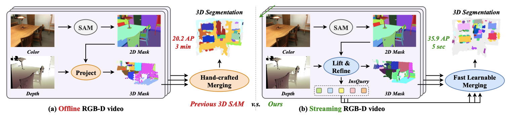
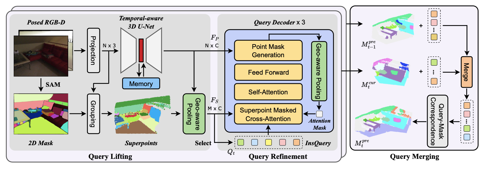
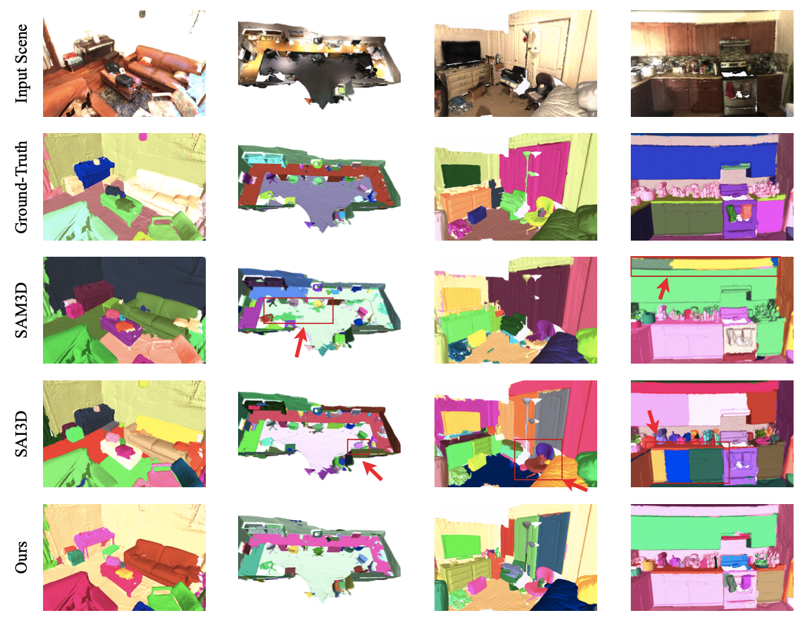
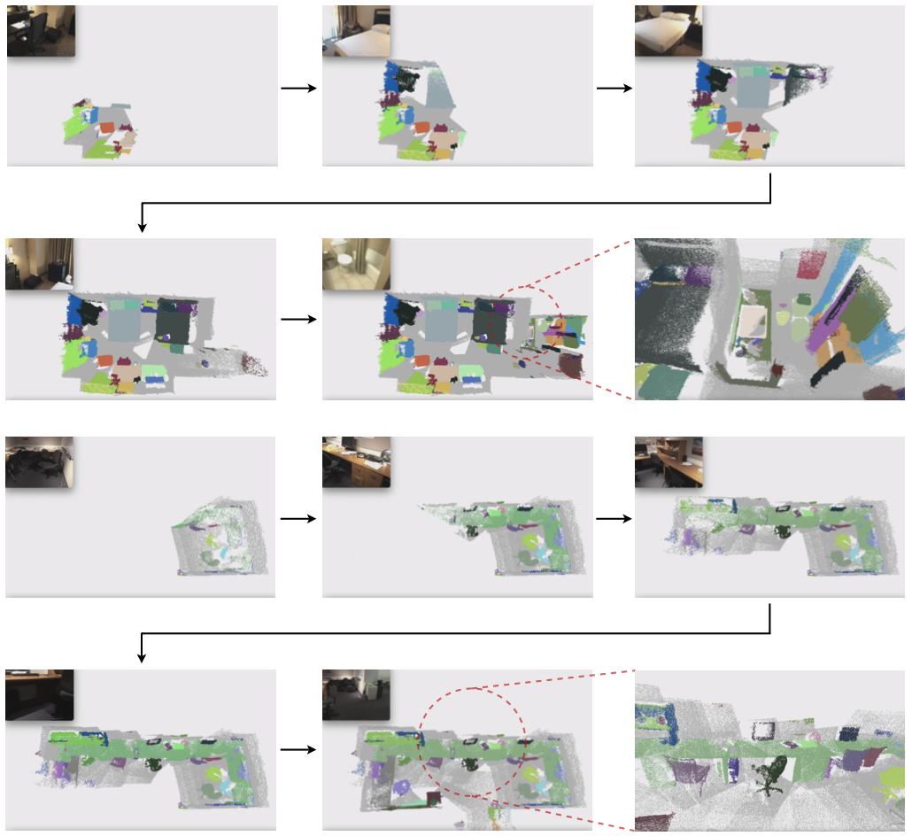
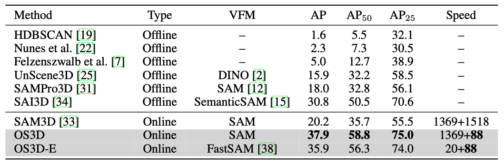
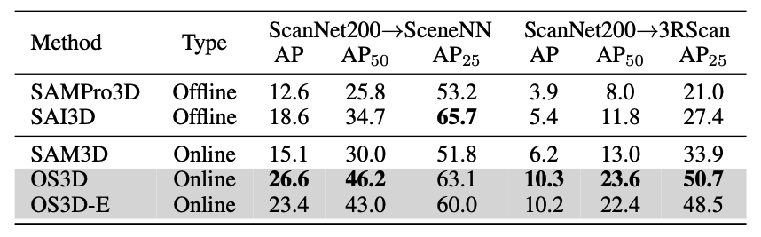
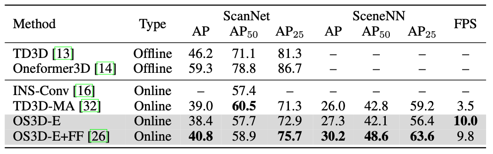
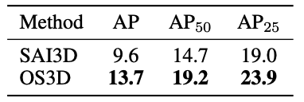
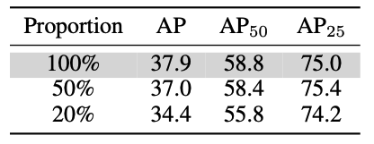

Embodied tasks require the agent to fully understand 3D scenes simultaneously with its exploration, so an online, real-time, fine-grained and highly-generalized 3D perception model is desperately needed. Since high-quality 3D data is limited, directly training such a model in 3D is almost infeasible. Meanwhile, vision foundation models (VFM) has revolutionized the field of 2D computer vision with superior performance, which makes the use of VFM to assist embodied 3D perception a promising direction. However, most existing VFM-assisted 3D perception methods are either offline or too slow that cannot be applied in practical embodied tasks. In this paper, we aim to leverage Segment Anything Model (SAM) for real-time 3D instance segmentation in an online setting. This is a challenging problem since future frames are not available in the input streaming RGB-D video, and an instance may be observed in several frames so object matching between frames is required. To address these challenges, we first propose a geometric-aware query lifting module to represent the 2D masks generated by SAM by 3D-aware queries, which is then iteratively refined by a dual-level query decoder. In this way, the 2D masks are transferred to fine-grained shapes on 3D point clouds. Benefit from the query representation for 3D masks, we can compute the similarity matrix between the 3D masks from different views by efficient matrix operation, which enables real-time inference. Experiments on ScanNet, ScanNet200, SceneNN and 3RScan show our method achieves leading performance even compared with offline methods. Our method also demonstrates great generalization ability in several zero-shot dataset transferring experiments and show great potential in open-vocabulary and data-efficient setting. Code is available, with only one RTX 3090 GPU required for training and evaluation.

Approach
Overall framework of our approach. At a new time instant, we first adopt SAM to generate 2D instance masks. We propose a geometric-aware query lifting module to lift 2D masks to 3D queries while preserving fine-grained shape information. Queries are refined by a dual-level decoder, which enables efficient cross-attention and generates fine-grained point-wise masks. Then current 3D mask is merged into previous masks by a fast query merging strategy.

Visualization
We visualize ESAM on both offline and online setting.

Visualization results of different 3D instance segmentation methods on ScanNet200 dataset. As highlighted in red boxes, SAM3D predicts noisy masks while SAI3D tends to over segment an instance into multiple parts.

Online visualization of ESAM on ScanNet200 dataset. Refer to the video demo on this page for more details.
Experiments
We evaluate our method on ScanNet, ScanNet200, SceneNN and 3RScan.

Class-agnostic 3D instance segmentation results of different methods on ScanNet200 dataset. The unit of Speed is ms per frame, where the speed of VFM and other parts are reported separately.

Dataset transfer results of different methods from ScanNet200 to SceneNN and 3RScan. We directly evaluate the models in Table 1 on other datasets to show their generalization ability.

3D instance segmentation results of different methods on ScanNet and SceneNN datasets. ESAM achieves leading accuracy and speed compared with previous state-of-the-art online 3D perception methods.

Open-vocabulary 3D instance segmentation results on ScanNet200 dataset. As an online method, ESAM surpasses the offline SAI3D by a large margin, which demonstrates great potential for practical application.

Performance of ESAM when trained with partial training set. Even with only 20% trainign data, ESAM still achieves state-of-the-art performance compared with the baselines in Table 1.
Bibtex
@article{xu2024esam,
title={EmbodiedSAM: Online Segment Any 3D Thing in Real Time},
author={Xiuwei Xu and Huangxing Chen and Linqing Zhao and Ziwei Wang and Jie Zhou and Jiwen Lu},
journal={arXiv preprint arXiv:xxxx},
year={2024}
}
 Paper (arXiv)
Paper (arXiv)
 Code (GitHub)
Code (GitHub)